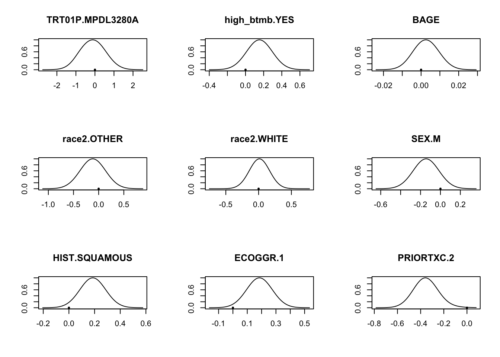
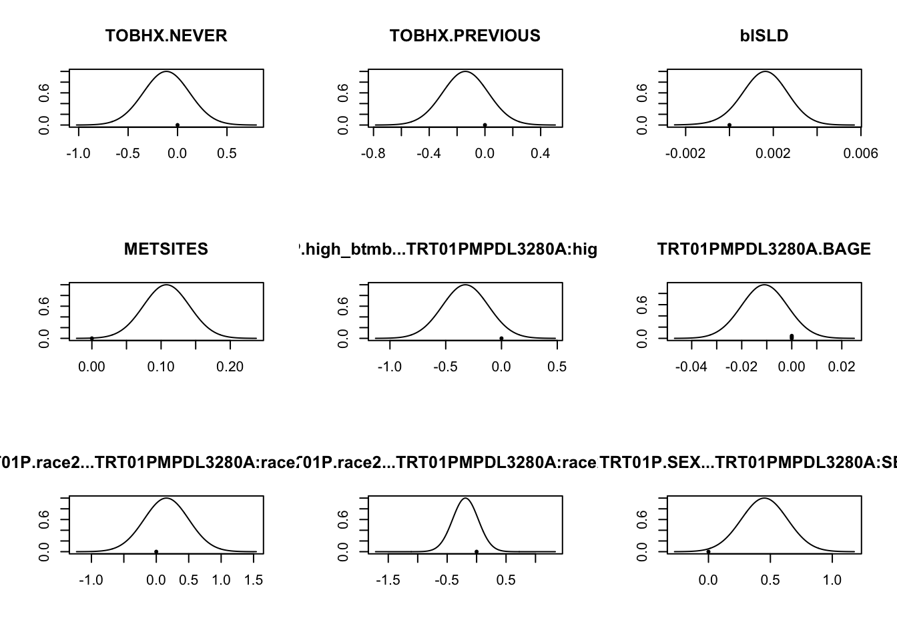
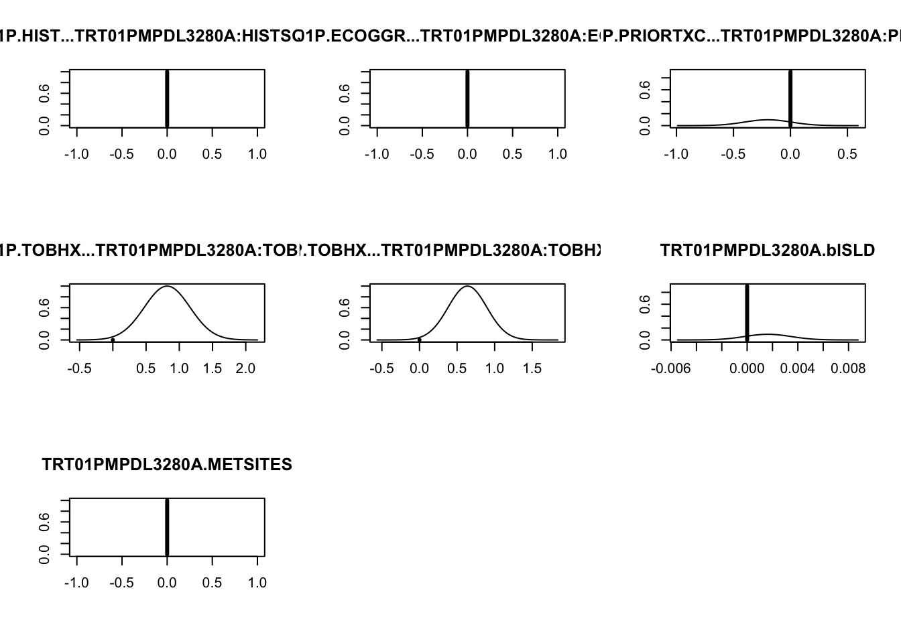

Bayesian model averaging: struggles with interaction
This post records my unsuccessful attempts to use Bayesian model averaging when some models contain interaction terms.
Data
Data comes from a phase 3 study of an immuno-oncology agent (MPDL3280A) versus chemotherapy (Docetaxel) in lung cancer. The endpoint I’m interested in is progression-free survival (PFS), and there are a number of other covariates (10) that could be prognostic and/or predictive.
library(dplyr)
library(survival)
library(BMA)
dat = rio::import("https://static-content.springer.com/esm/art%3A10.1038%2Fs41591-018-0134-3/MediaObjects/41591_2018_134_MOESM3_ESM.xlsx",
setclass = "tibble",
which = 3,
na = c("", ".")) %>%
mutate(PFS.EVENT = -1 * (PFS.CNSR - 1),
high_btmb = ifelse(btmb >= 16, "YES", "NO")) %>%
select(TRT01P, PFS, PFS.EVENT,
high_btmb, BAGE, race2,
SEX, HIST, ECOGGR, PRIORTXC,
TOBHX, blSLD, METSITES) %>%
mutate_if(is.character, as.factor)
head(dat)## # A tibble: 6 x 13
## TRT01P PFS PFS.EVENT high_btmb BAGE race2 SEX HIST ECOGGR PRIORTXC
## <fct> <dbl> <dbl> <fct> <dbl> <fct> <fct> <fct> <dbl> <dbl>
## 1 Docet… 1.28 1 NO 64 WHITE M NON-… 1 1
## 2 Docet… 2.33 1 NO 65 WHITE M NON-… 0 1
## 3 Docet… 1.94 1 YES 75 WHITE M SQUA… 1 1
## 4 Docet… 12.3 1 NO 61 WHITE F NON-… 0 2
## 5 MPDL3… 1.41 1 YES 53 WHITE F NON-… 1 1
## 6 Docet… 8.54 1 <NA> 80 WHITE M NON-… 1 1
## # … with 3 more variables: TOBHX <fct>, blSLD <dbl>, METSITES <dbl>Goal of the analysis
In an ideal world, I want to see which (if any) variables have an interaction with treatment, and, simultaneously, I want to produce reasonable estimates of the magnitudes of such effects. This is probably asking too much, but in a naive first attempt I plugged in all variables (along with their interaction with treatment) into BMA::bic.surv
x <- dat[complete.cases(dat),]
x$ECOGGR <- factor(x$ECOGGR)
x$PRIORTXC <- factor(x$PRIORTXC)
fit <- bic.surv(Surv(PFS, PFS.EVENT) ~ .*TRT01P, data = x)
data.frame(variable = names(fit$output.names),
probability_non_zero = fit$probne0)## variable probability_non_zero
## 1 TRT01P 4.0
## 2 high_btmb 0.0
## 3 BAGE 0.0
## 4 race2 0.0
## 5 SEX 0.9
## 6 HIST 15.6
## 7 ECOGGR 30.9
## 8 PRIORTXC 83.2
## 9 TOBHX 0.0
## 10 blSLD 38.9
## 11 METSITES 98.9
## 12 TRT01P.high_btmb.. 17.6
## 13 TRT01PMPDL3280A.BAGE 4.3
## 14 TRT01P.race2.. 0.0
## 15 TRT01P.SEX.. 0.0
## 16 TRT01P.HIST.. 0.0
## 17 TRT01P.ECOGGR.. 0.8
## 18 TRT01P.PRIORTXC.. 20.2
## 19 TRT01P.TOBHX.. 0.0
## 20 TRT01PMPDL3280A.blSLD 0.0
## 21 TRT01PMPDL3280A.METSITES 1.9This gave a posterior probability of 4% of the main effect of treatment being non-zero. I thought this was a bit low. In a univariable Cox model the effect of treatment is modest, but not tiny:
coxph(Surv(PFS, PFS.EVENT) ~ TRT01P, data = x)## Call:
## coxph(formula = Surv(PFS, PFS.EVENT) ~ TRT01P, data = x)
##
## coef exp(coef) se(coef) z p
## TRT01PMPDL3280A -0.11178 0.89425 0.08404 -1.33 0.184
##
## Likelihood ratio test=1.77 on 1 df, p=0.1835
## n= 641, number of events= 584Then I looked more closely at the interaction terms. Take, for example, the fourth most likely model:
sf <- summary(fit)m4 <- cbind(names(sf[, "model 4"]),
as.numeric(unname(sf[,"model 4"])))
m4## [,1] [,2]
## [1,] "TRT01P" NA
## [2,] " .MPDL3280A" NA
## [3,] "high_btmb" NA
## [4,] " .YES" NA
## [5,] "BAGE" NA
## [6,] "race2" NA
## [7,] " .OTHER" NA
## [8,] " .WHITE" NA
## [9,] "SEX" NA
## [10,] " .M" NA
## [11,] "HIST" NA
## [12,] " .SQUAMOUS" NA
## [13,] "ECOGGR" NA
## [14,] " .1" NA
## [15,] "PRIORTXC" NA
## [16,] " .2" "-0.36197"
## [17,] "TOBHX" NA
## [18,] " .NEVER" NA
## [19,] " .PREVIOUS" NA
## [20,] "blSLD" "0.00243"
## [21,] "METSITES" "0.11115"
## [22,] "TRT01P.high_btmb.." NA
## [23,] " .TRT01PMPDL3280A:high_btmbYES" "-0.268703"
## [24,] "TRT01PMPDL3280A.BAGE" NA
## [25,] "TRT01P.race2.." NA
## [26,] " .TRT01PMPDL3280A:race2OTHER" NA
## [27,] " .TRT01PMPDL3280A:race2WHITE" NA
## [28,] "TRT01P.SEX.." NA
## [29,] " .TRT01PMPDL3280A:SEXM" NA
## [30,] "TRT01P.HIST.." NA
## [31,] " .TRT01PMPDL3280A:HISTSQUAMOUS" NA
## [32,] "TRT01P.ECOGGR.." NA
## [33,] " .TRT01PMPDL3280A:ECOGGR1" NA
## [34,] "TRT01P.PRIORTXC.." NA
## [35,] " .TRT01PMPDL3280A:PRIORTXC2" NA
## [36,] "TRT01P.TOBHX.." NA
## [37,] " .TRT01PMPDL3280A:TOBHXNEVER" NA
## [38,] " .TRT01PMPDL3280A:TOBHXPREVIOUS" NA
## [39,] "TRT01PMPDL3280A.blSLD" NA
## [40,] "TRT01PMPDL3280A.METSITES" NA
## [41,] "" NA
## [42,] "nVar" "4"
## [43,] "BIC" "-17.33416"
## [44,] "post prob" "0.049"…this model contains 4 parameters: main effects for prior treatment, baseline sum of diameters, number of metastases, and an effect of being both TRT01P == MPDL3280A and high_btmb == YES. Note that there is no variable for the main effect of treatment (nor TMB) in this model. That is, we are fitting models with interaction terms where their main effects are not included. This is, in general, a bad thing. So bad, in fact, that R will not even allow me to fit this model using standard syntax. If I try to do it…
coxph(Surv(PFS, PFS.EVENT) ~ PRIORTXC + blSLD + METSITES + TRT01P:high_btmb,
data = x,
method = "breslow",
iter.max = 30)## Call:
## coxph(formula = Surv(PFS, PFS.EVENT) ~ PRIORTXC + blSLD + METSITES +
## TRT01P:high_btmb, data = x, method = "breslow", iter.max = 30)
##
## coef exp(coef) se(coef) z
## PRIORTXC2 -0.3612339 0.6968160 0.0987439 -3.658
## blSLD 0.0022519 1.0022544 0.0009478 2.376
## METSITES 0.1109506 1.1173397 0.0318342 3.485
## TRT01PDocetaxel:high_btmbNO 0.2579332 1.2942524 0.1415469 1.822
## TRT01PMPDL3280A:high_btmbNO 0.2402823 1.2716080 0.1405986 1.709
## TRT01PDocetaxel:high_btmbYES 0.3815722 1.4645855 0.1688867 2.259
## TRT01PMPDL3280A:high_btmbYES NA NA 0.0000000 NA
## p
## PRIORTXC2 0.000254
## blSLD 0.017509
## METSITES 0.000492
## TRT01PDocetaxel:high_btmbNO 0.068418
## TRT01PMPDL3280A:high_btmbNO 0.087452
## TRT01PDocetaxel:high_btmbYES 0.023862
## TRT01PMPDL3280A:high_btmbYES NA
##
## Likelihood ratio test=43.91 on 6 df, p=7.704e-08
## n= 641, number of events= 584…then rather than receiving a model with 4 variables, I have been given a model with 6 variables. The main effects of TRT01P and high_btmb have been included as well. (This is the behaviour for factors; you are allowed to include a continous variable in an interaction term without including it as a main effect).
In conclusion, the output from the model averaging is more-or-less uninterpretable when including interactions.
Predictive distributions
Although inference on individual parameters is not possible, it’s still likely that BMA will produce good predictions when I take the whole (mixed) model fit into account. At this point, I had a half-formed plan of re-fitting all of the ‘best’ models using flexsurv::flexsurvspline to give me the baseline hazards as well, and then combining the output to give me personalized predictive survival curves.
But then I realized how much work that would involve, especially without access to R’s standard model syntax. It’s possible with some effort to reproduce the “4th best model”:
mm_full <- model.matrix(Surv(PFS, PFS.EVENT) ~ .*TRT01P, data = x)
mm_4 <- mm_full[ ,attr(mm_full, "assign") %in% which(fit$which[4,])]
coxph(Surv(PFS, PFS.EVENT) ~ .,
data = cbind(x[,c("PFS", "PFS.EVENT")],
as.data.frame(mm_4)),
method = "breslow",
iter.max = 30)## Call:
## coxph(formula = Surv(PFS, PFS.EVENT) ~ ., data = cbind(x[, c("PFS",
## "PFS.EVENT")], as.data.frame(mm_4)), method = "breslow",
## iter.max = 30)
##
## coef exp(coef) se(coef) z
## PRIORTXC2 -0.3619700 0.6963033 0.0987112 -3.667
## blSLD 0.0024295 1.0024325 0.0009301 2.612
## METSITES 0.1111500 1.1175626 0.0317456 3.501
## `TRT01PMPDL3280A:high_btmbYES` -0.2687027 0.7643705 0.1310337 -2.051
## p
## PRIORTXC2 0.000245
## blSLD 0.008997
## METSITES 0.000463
## `TRT01PMPDL3280A:high_btmbYES` 0.040302
##
## Likelihood ratio test=42.81 on 4 df, p=1.131e-08
## n= 641, number of events= 584However, functions like predict etc also wouldn’t work, and I’d have to do everything manually, and it probably wasn’t worth the effort.
Force all main effects to be included in the model
It’s possible to force all main effects to be included in the model
fit_2 <- bic.surv(Surv(PFS, PFS.EVENT) ~ .*TRT01P,
data = x,
prior.param = c(rep(1, 11), # main effects
rep(0.5, 10))) # interactions with trtThen I think I’m back to a situation where I can safely look at the effect of individual parameters…
plot(fit_2)
…but there’s not a lot of regularization going on now. Doesn’t look a lot different to a backward elimination, or something similar.
Alternative ways forward
Abandon model averaging and use something else: ridge/lasso regression or their Bayesian alternatives. Especially if I need to increase the number of dimensions as well. This is what I intend to explore next.
Dominic Magirr
Medical Statistician
Interested in the design, analysis and interpretation of clinical trials.